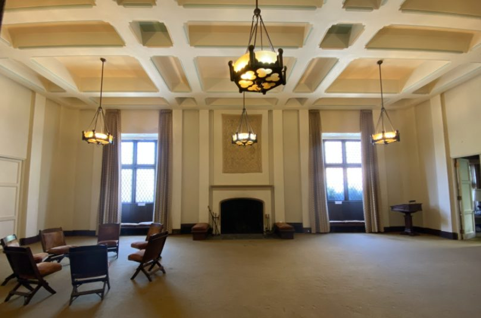
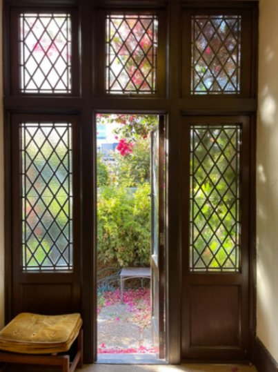
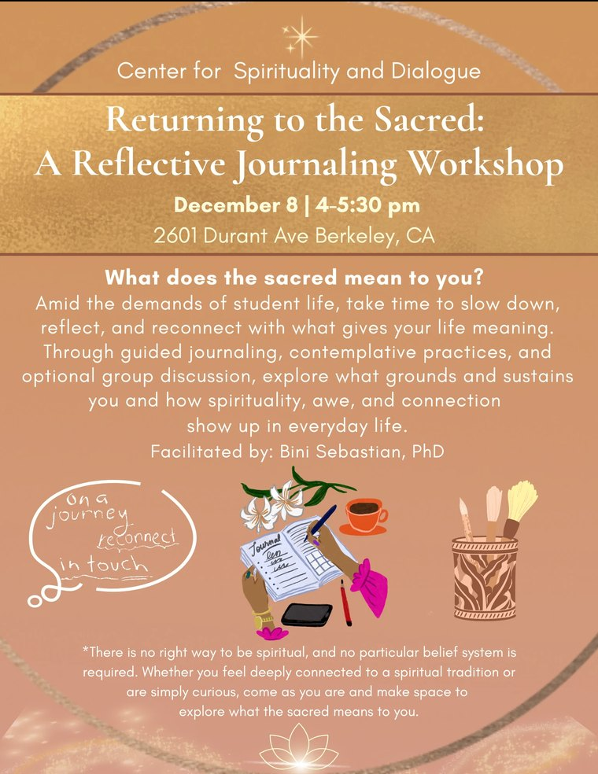

Center for Spirituality and Dialogue
An inclusive space near campus for meditation, prayer, reflection and real conversation across cultures, faiths and beliefs.



Upcoming event

Returning to the Sacred: A Reflective Journaling Workshop
4:00 to 5:30 PM at the Center
What does the sacred mean to you?
Through guided journaling, contemplative practices, and optional group discussion, we’ll explore what brings us meaning, inspires awe, and grounds us amid the demands of student life.
Whether you’re connected to a spiritual tradition or simply curious, come as you are and make space to explore what the sacred means to you. No particular belief system is required.
Facilitated by Bini Sebastian, PhD
Every week · drop in
Weekly meditation
Thursdays, 12 to 1 PM
Join us for guided meditations or use this time for self-guided meditation. This hour is hosted by Corey Dodson.
Questions: dodsoncorey92@berkeley.edu
Fridays, 4 to 5 PM Starting November 27
Bring your meditation group and use the space to sit together. Dr. Peter Cornish hosts this drop-in hour.
Questions: pcornish@berkeley.edu
For students and clubs
Get involved
Help build the Center
Students decide what the Center becomes. Steward the space, shape how the building is used, plan programs or join a planning team.
Use the space
Student clubs can request the space for meditation, prayer gatherings, discussion or CSD-inspired events. Please ask at least 3 business days ahead.
About the Center
Students decide what the Center becomes, and we are literally building it.
Students of every background, whether or not they follow a tradition, have a place here to slow down, connect and understand one another more deeply. The Center is in a historic building one block from campus, used for spiritual study and prayer since the 1930s. Film screenings, talks and dialogue circles, co-hosted with clubs, are also planned.
Visit
Visit
2601 Durant AvenueBerkeley, CA 94704
Corner of Durant and Bowditch
For now the Center is open during weekly meditation and events.